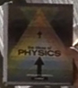
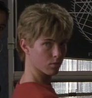
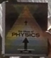
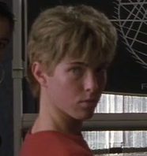

엑스맨에서는 울버린이 자비에 영재학교에 새로 등장합니다. 자비에 영재학교에서 눈을 뜬 울버린은 머릿속에 울리는 찰스 자비에의 목소리에 혼란스러워하며 학교 안을 배회합니다. 배회하다가 들어간 곳은 찰스 자비에가 수업을 하는 교실입니다. 우리는 울버린의 시선으로 찰스 자비에 영재학교의
수업 장면을 보게 됩니다.
울버린의 등장으로 수업을 마친 찰스 자비에는 조금 전 끝낸 수업의 교과서를 들어 올립니다. 우리는 이 장면에서 책을 재현하는 데 도움이 될만한 단서를 얻을 수 있습니다. 장면에서 발견한 책을
확대해보면 ‘the’와 ‘of, PHYSICS’라는 단어가 보입니다. ‘the’와 ‘of’ 사이의 글자는 판별해 내기가 쉽지 않습니다. 재현을 위해 찰스 자비에 학생들이 ‘어떤’ 물리학을 배우고 있는지 추론해야 합니다.
찰스 자비에가 직접 언급한 물리학이라는 분야를 먼저 알아봅니다. 물리학이란, 물질과 그것에 관련된 에너지나 힘, 운동 등을 연구하는 자연과학의 한 분야입니다. 연구하는 대상에 따라 다양한 분야로 나뉠 수 있는데요. 수업에서는 광학(Optics)과 우주론(Cosmology)이 언급되었으며, 이를 알 수 있는 증거들을 발견했습니다. 칠판에 그려진 구면 거울의
그림과 단어들(첫 번째 그림의 ‘RADIUS OF CURVATUR’은 곡률 반지름을, ‘CENTER OF CURVATURE’은 곡률의 중심점을, ‘PRINCIPAL AXIS’은 주축을 뜻합니다. 두 번째 그림의 VERTEX는 꼭짓점을 뜻합니다. 세 번째 그림의 FOCAL PLANE은 주요 평면을, RAYS FROM DISTANT OBJECT은 먼 물체로부터의 광선을 뜻합니다.)은 빛의 진행을 아주 작은 입자의 운동으로 보고 빛이 직진하거나 반사되거나 굴절하는 특성만을 가지고 광학 현상을 기하학적으로 이해하려는 기하광학에서 주로 쓰이는 자료와 단어들입니다. 따라서 이들이 수업에서 광학을 배우고 있음을 말해주고 있습니다. [00:24:58]에서 찰스 자비에의 “좋은 아침, 로건? 강한 인류원리와 약한 인류 원리에 대한 정의를 수요일까지 연구해 오도록. 수업 끝.”이라는 대사를 통해 수업에 우주론도 포함됐음을 알 수 있습니다.
우주론은 전체적인 우주, 나아가서 그 내부에서 인간의 위치를 수학적인 자료를 이용하여 연구하는 분야를 말하며*«소개: 우주론» 스티븐 배터스비. 뉴 사이언티스트. 2006., 인류 원리(Anthropic principle)란 우주론에 근거한 모든 우주 모형들은 우주에 지적 생명체가 있을 수밖에 없는 이유를 설명해야 한다는 원리입니다*«천문학» 자일스 스패로, 아르테, 2017.. 인류 원리에는 두 가지 주장이 존재하는데요, 그것이 바로 찰스 자비에가 과제로 부여한 강한 인류 원리(Strong anthropic principle)와 약한 인류 원리(Weak anthropic principle)입니다. 인류 원리를 최초로 주장한 브랜든 카터의 말을 빌리자면, 강한 인류 원리는 우주에서 지적 생물체가 존재할 수 있는 환경은 매우 제한적이기 때문에 필연적으로 지적 생물체의 시공간적 위치를 결정하는 우주의 관찰자를 인정해야 한다는 주장이고, 약한 인류 원리는 우주에서 인류의 위치는 관찰자로서 존재하며, 1973년의 크라쿠프 심포지엄에서 카터는 “우주에서 인류의 존재는 핵심적이지는 않지만 어느 정도 특권을 갖는다는 사실을 고려해야 한다.”라고 말한 바 있습니다*«우주론에서의 큰 수의 우연성과 인류원리» 브랜든 카터. IAU 심포지엄 63: 관측 자료와 우주론의 대결. 1973.. 빅뱅이론
시즌6 에피1에서는 “인류원리란 우주가 존재하는 이유를 설명하고 싶다면 그런 질문을 던질 지성체가 발생할 정도의 특성이 그 우주에 있어야 한다는 게 해답이야.”라고 언급한 바 있습니다.
물리학과 우주론과의 연관성을 찾아보자면, 우주의 구조와 움직임을 연구하여 그 형성과 발달에 관해 탐구하는 물리 우주론이 검색되긴 하지만, 우주론과 광학과의 연관성은 찾을 수 없었습니다. 광학과 인류원리가 서로 연결된 자료 또한 찾을 수 없었습니다. «Lessons from an Optical Illusion: On Nature and Nurture»라는 책에서 “The Anthropic Principle”이
등장하지만 제목에서 Optical Illusion은 착시를 의미하고 있으므로 전혀 광학과 관계가 없고, 책의 내용 또한 광학과는 별개로 인류 원리만을 언급하고 있습니다. 광학과 천문학과의 연관성은 가시광선의 영역 내에서 천문을 관측할 수 있도록 돕는 광학 천문학이 검색되었지만, 찰스 자비에는 물리학 수업을 하고 있었으므로 천문학과의 연관성은 책을 재현하는 힌트로 작용하기는 어려워 보입니다. 우주론과 광학이 같이 언급된 것은 오류일까요?
‘어떤’ 물리학을 가르치고 있는지 추론하기 위해서 다른 힌트를 찾아보자면,
수업을 듣는 학생들을 생각해 볼 수 있습니다. 왼쪽부터 주빌리, (알 수 없음), 파이로, 바비, 키티입니다.
주빌리는 힘과 강도의 정도가 다른 형형색색의 작은 에너지 구체인
플라즈모이드를 생성하거나 조작하여 상대방의 시야를 방해하거나 폭발을 일으켜 상처를 입힐 수 있습니다. 플라즈모이드란 자기장이 형성되어 구 형태를 띠는 플라스마로, 기체 상태의 물질이 더 많은 열에너지를 받아 전자와 핵이 분리되어 이들 상호 간에 당기고 밀어내는 전기적 상호 작용을 하는 기체입니다. 고체, 액체, 기체의 3가지 상태와 더불어 ‘4번째 상태’로도 알려졌으며, 우주의 99%를 구성하고 있는 플라스마는 우주의 생성 및 별의 생성과도 밀접한 관련이 있습니다. 우주의 플라스마를 간접적으로 경험할 수 있는 현상으로 형형색색의 빛을 띠는 오로라를 예로 들 수 있습니다*‘우주 플라스마’ 플라스마 응용 연구실,2004.. 수소 핵들의 결합으로 헬륨 원자핵이 만들어지는 과정은 그 자체로
핵융합 반응의 연속입니다. 연속된 핵융합으로 엄청난 열에너지를 내뿜는 태양이 핵융합 반응의 대표적인 예입니다. 핵융합이 일어나기 위해서는 수소 원자에서 전자(음극)와 핵(양극)을 분리하여 핵끼리 결합을 해야 하는데 전자와 핵이 분리된 플라즈마 상태가 마련되어야 합니다. 핵융합을 통해 생성된 열에너지는 전기에너지로 변환할 수 있으며, 이를 핵융합 발전이라고 합니다*‘핵융합반응/플라즈마’ 플라즈마 응용 연구실, 2004..
주빌리는 영화 ‹엑스맨: 아포칼립스› 에서는 수업 중 찰스 자비에의 질문에 답하기 위해 열심히
손을 들고 만화‹섬뜩한 엑스맨 #244›에서는 자신의 능력으로 백화점에서
불꽃놀이를 하며, 영화‹엑스맨: 아포칼립스› DVD에 포함된 삭제 영상에서는 자신의 능력을 사용하여 동전을 넣지 않고
게임기를 작동시키기도 합니다. 이렇듯 자신의 능력을 잘 이해하고 있는 주빌리는 특별한 장치 없이 자신이 생성하고 조작할 수 있는 플라즈모이드에 대한 구조나 응용방식의 연구를 통해 플라즈모이드의 한계를 시험하고 강화하려는지도 모르겠습니다.
파이로는 염력으로 불꽃을 조종하는 염화 초능력을 갖고 있습니다. 정신력으로 열을 증가시키거나 감소시키거나 크기나 강도를 조절할 수 있습니다. 몸에서 플라스마가 생성되는 주빌리와 달리 파이로는 불을 스스로 생성할 수 없으므로 항상 발화장치를 필요로 합니다. 영화 초반에는
지포 라이터를, 영화 후반에는
소형 압전기를 발화장치로 사용합니다. 두 장치는 압전효과를 활용한 장치입니다. 압전효과는 양전하와 음전하의 위치가 어긋나 있는 압전소자에 외부 압력을 가해 순간적으로 높은 전압을 발생시키는 것으로, 압력에 의해 발생한 전기에너지는 스파크로 변하게 됩니다*‘[신재생 에너지] 누르면 전기가 발생하는 ‘압전효과’ 원리를 살펴보자’ 한국에너지공단, 2014.. 스파크를 이용해 가스를 점화시키는 지포 라이터와 가스레인지가 대표적인 예입니다. 스스로 불을 생성할 수 없는 파이로는 전자의 이동에 의한 연소의 원리를 파악하기 위해 주빌리와 같은 수업을 듣고 있는 것이 아닐까 추측해볼 수 있습니다.
바비, 일명 아이스맨으로, 주위의 수증기 온도를 낮추는 능력을 갖추고 있습니다. 물체 자체의 분자를 얼리거나, 수증기를 얼려 얼음 구조물을 만들 수도 있습니다.
신체를 얼음구조로 바꿀 때 바비의 체온은 영하 76도까지 내려가며 단단한 얼음구조는 공격력과 방어력을 높이기도 합니다. 몸 일부가 조각나거나 떨어질 경우, 얼음구조를 다시 생성하여 복구시킬 수 있습니다. 수증기가 얼음이 되는 현상은 상전이의 대표적인 예입니다. 물은 보통 액체이지만 공기에 증발된 상태로 존재하는 수증기(기체)가 냉각되면 얼음(고체)이 되는 것입니다. 얼음을 생성해내는 바비의 능력은 열에너지를 뺏는 능력이라고 말할 수 있습니다. 바비가 음료를 차갑게 한다거나 불을 다루는 파이로의 손목을 잡아 얼려버리는
장면 을 통해서도 그가 얼음 자체를 ‘생성’한다기보다 물질의 열에너지를 빼앗는 능력에 가깝다는 것을 알 수 있습니다.
을 통해서도 그가 얼음 자체를 ‘생성’한다기보다 물질의 열에너지를 빼앗는 능력에 가깝다는 것을 알 수 있습니다.
수증기가 얼음으로 변하는 상전이 현상을 검색하며, 물리학에서의 ‘상(Phase)’ 개념을 알게 되었습니다. 상이란 어떤 물질이 균일한 물리적·화학적 성질을 가진 상태를 의미합니다. 그러한 물질의 상태 가운데 고체, 액체, 기체가 대표적인 분류이지만 그 밖에도 플라스마, 액정, 초유체, 초고체, 자석 등도 물질의 상이라고 할 수 있습니다. 주빌리와 파이로, 바비의 능력이 모두 물질의 상과 연관이 있으며, 능력의 씨앗이 되는 상의 성질을 연구하고 상이 결정되는 다양한 변화들을 같이 연구하여 자신의 능력을 각성하려고 한 것은 아닐까요? 영화‹엑스맨: 아포칼립스›에서 어린 엑스맨들의
성적표에서도 알 수 있듯 자비에 영재 학교에서는 자신이 듣고 싶은 수업을 자유롭게 선택할 수 있으며, 자신의 능력이 고려사항이 되어 수업을 선택하고 있음을 알 수 있습니다. 자비에 영재 학교 학생들은 자신이 갖춘 능력의 원리를 이해하고 이해를 통해 능력을 최대화하는 것을 수업목표로 하고 있다는 점을 고려하면, 물리학 연구를 통해 자신의 능력을 강화시키려 하는 공통점을 가진 학생들이 선택과목으로 ‘어떤’ 물리학 수업을 선택한 것으로 추정되며, 이는 물리학을 ‘응용’하는 것으로 재현되는 책의 제목은 «물리학의 응용(the use of PHYSICS)»입니다.


 


